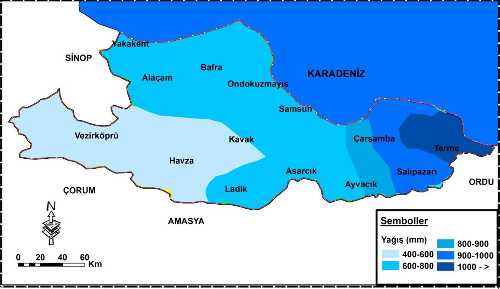

SAMSUN
Tarihöncesi ve erken çağlar
Samsun'daki yerleşim geçmişi Eski Taş Çağı'na dek uzanmaktadır. Tekkeköy Mağaralarında keşfedilen ve MÖ 60.000 yılına dek uzandığı düşünülen katman, şimdiye dek Karadeniz Bölgesi'nde keşfedilen en eski yerleşimdir. Aynı zamanda Türkiye'deki en eski üçüncü, dünyada ise sekizinci yerleşim olduğu tahmin edilmektedir. Mağara yerleşiminde yaşayan bu insanlar topluluk bilinci gelişmemiş ve henüz üretici pozisyonuna geçmemişlerdi. Karanlık çağların ardından, MÖ 5000-3000 yıllarından itibaren Anadolu'da var oldukları bilinen ve Hattilerin bir kolu olduğu düşünülen Kaşkalar, MÖ 3500'lü yıllarda Mert Irmağı kenarında, günümüzde Dündartepe Höyüğü'nün bulunduğu yerde bir site oluşturmuşlardır. Höyüğün kazıları sırasında en eski yerleşimin Bakır Çağı'na ait olduğu; burada yerleşik toplulukların avcılık ve hayvancılık yaparak geçindiği, kumaş ve deri işleyebildiği; bakırdan alet, silah ve takı yapabildikleri saptanmıştır. Kent, Kaşkaların ardından I. Murşili tarafından fethedilerek Hitit Krallığı topraklarına katılmıştır. Hitit döneminde özel bir durumu olmayan yerleşim yerinde Enetler adı verilen halkın yaşadığı ve Eneti adıyla anıldığı düşünülmektedir. Kent, MÖ 1182 civarında Hitit İmparatorluğu'nun çöküşünü takiben Frigler tarafından ele geçirilmiş ve tahrip edilmiştir. Aynı dönemde Kimmerler de Doğu Karadeniz'de yer alan kentleri yakıp yıkmışlardır. Lidya Kralı Gigis Kimmerleri yenilgiye uğratıp bölgeden kovmuşsa da bu dönemde şehir harabe hâline dönüşmüştür. Bunun üzerine eski kentin güneybatısına yeni bir yerleşim kurulmuş, tarıma elverişli toprakları ve artan nüfus baskısı nedeniyle MÖ 7. yüzyılda Foçalıların veya Miletlilerin ilgisini çeken bölge kolonileştirilmiştir. Ahameniş İmparatoru II. Kiros'un dönemindeyse Pers hâkimiyetine girmiştir. Ahameniş İmparatorluğu'nu yeniden örgütlemeye girişen I. Darius döneminde kent, Kapadokya satraplığının hâkimiyet bölgesi içine alınmış ve tiran unvanı taşıyan askerî valiler tarafından yönetilmeye başlanmıştır. MÖ 331 yılında İskender'in Persleri Gaugamela Muharebesi'nde yenilgiye uğratıp Ahameniş İmparatorluğu'nu Makedonya topraklarına katmasıyla birlikte Samsun da Makedon hâkimiyetine girmiş, böylece kentte askerî temelli bir yönetim anlayışından tekrar demokratik yönetime dönülmüştür. İskender'in ölümüyle birlikte zayıflayan ve parçalanan Makedonya'dan bağımsızlığını ilân eden bölgelerden biri de I. Antiohos liderliğindeki Seleukos İmparatorluğu olmuş, Samsun MÖ 315'te bu devletin idaresi altına altına girmişse de kısa süre sonra Ariobarzanis ya da II. Mithridatis döneminde Pontus Krallığı toprakları içerisine sokulmuştur. VI. Mithridatis'in döneminde kraliyet ikâmetgâhı olarak kullanılan Samsun'da geniş bir imar hareketi başlatılarak şehir önemli bir gelişme kaydetmiştir.
Karadeniz Bölgesi'nin en eski yerleşim noktası olan Tekkeköy Mağaralarındaki Tunç Çağı yerleşimini tasvir eden maket.
Dânişmendliler tarafından inşa edilen Samsun Kalesi'nin görünümü.
Günümüz Samsununun görünümü.
Ne demiş Mustafa Kemal?

Mustafa Kemal ATATÜRK
Ben Samsun’u ve Samsun Halkını gördüğüm zaman, memlekete ve millete ait bütün düşünce ve kararlarımın yerine getirilebileceğine dair bir defa daha kuvvetle inanmıştım. Samsun’luların hal ve durumlarında gördüğüm gözlerinden okuduğum vatanseverlik ve fedakarlık ; ümit ve tasavvurlarımı olumlu bir inanca götürmeye yetmişti...
Fotoğraflar Köşesi
Samsun Arkeoloji ve Etnografya Müzesi
Tütün İskelesi ve Kurtuluş Yolu
Bandırma Vapuru ve Milli Mücadele Parkı Açık Hava Müzesi
Milli Kurtuluş Anıtı
Onur Anıtı
İlkadım Anıtı
Amazon Adası, Batı Park
Amisos Tepesi
Sevgi Gölü
Kızılırmak Deltası Kuş Cenneti
Şahinkaya Kanyonu Tabiat Parkı
Samsun İklimi
İklim
Samsun iklimi şehrin konumu ve coğrafyası dolayısıyla sahil ve iç kesimlerde değişiklik göstermektedir.[161] Köppen iklim sınıflandırmasına göre "Cfa" türünde ılıman dönencealtı iklimi görülen ilin tipik Karadeniz ikliminin yaşandığı sahil şeridinde yaz ayları sıcak ve nemli, kışlar ise ılık-serin geçmekte; buna karşın Akdağ ve Canik Dağlarının etkisiyle karasal iklime sahip olan iç kesimlerde kışlar soğuk, yağmurlu ve kar yağışlı, yazlar ise serin geçmektedir.[162][163] Meteoroloji Genel Müdürlüğünün 1929-2018 yılları arasındaki ölçüm değerlerine göre Samsun'un yıllık sıcaklık ortalaması 14.5 °C olup ölçülen en yüksek sıcaklık 15 Ağustos 1938 günü kayda geçen 39.0 °C, en düşük sıcaklık ise 9 Şubat 1929 günü kayda geçen -9.8 °C'dir.